顶条（所有模式）
- 左：
>> ×2 SPEED/×3 SPEED，金字，可点 - 中：红色拱形 Boss / 关卡总血。数字是
当前 / 上限，下面一行89%、DAMAGE累计、计时02:47、PAUSE - 右：
MANUAL/FULL AUTO/ 半自动。Boss 战国际服这支是手动，韩服 Ragna 和 WB 是全自动 - 主线多一行关卡名 +
PHASE 1/3（wiki「第7關 第二次死亡」）。Ragna / WB 没有 PHASE，只有一条百万级总血
这是设计手册的 动效模块。UI 铬见 UI，公式见 数值。三支 YouTube 按关键时刻抽了静帧和 12fps 连拍。战斗核是同一套：圆台 + 拱形 Boss 血 + 底栏圆头像。换的是人数、大厅皮、Boss 体量和全屏演出词。下面所有图都是录像中缝裁出来的战斗屏，左右 Home / 立绘是录屏分栏，不是游戏 UI。
你点名要的五种战场：普通主线、困难主线、星云、Raid、世界王。这三支录像只覆盖了 Ragna:Break（国际服 + 韩服）和世界王。 标题里的「Raid Season 12」结算屏写的是 RAGNA:BREAK COMPLETE，韩服常把拉格纳爆破叫成 Raid。普通主线只在 GameKee 静帧里有一张「第7關 · PHASE 1/3」。困难主线和星云没有录像、也没有单独战场静帧——铬和主线同一套，换的是入口和数值。
| 录像 | 片长 | 实际模式 | 操作档 | 没拍到 |
|---|---|---|---|---|
| mJrT2conPCI Global Ragna:Break S3 | ~383s 横屏三栏 | 5 人打 Equinoctial Bari（月夜圆台） | MANUAL · ×2 | 主线 / 星云 |
| Vdf4V693IcU KR「Raid S12」 | ~262s 三栏 | 结算是 Ragna:Break，Boss 창기사 루인 | FULL AUTO · ×3 | 5 人公会 Raid 大厅（若和拉格纳不是同一入口） |
| 89jpoNqAwa8 100th WB | ~394s 竖屏 | World Boss Trial · Aurora King | FULL AUTO · ×3 · 20 头像 | 主线 / 星云；后半是抽卡 |
主线静帧和 Boss 录像对得上：角色站在圆形石台上，不是棋盘。UI 贴顶贴底，中间留给人。


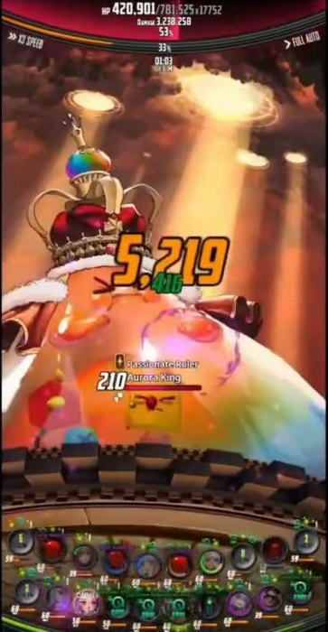
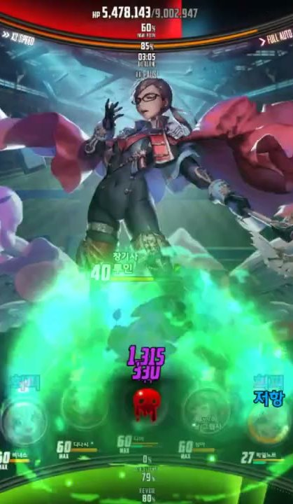
>> ×2 SPEED / ×3 SPEED，金字，可点当前 / 上限，下面一行 89%、DAMAGE 累计、计时 02:47、PAUSEMANUAL / FULL AUTO / 半自动。Boss 战国际服这支是手动，韩服 Ragna 和 WB 是全自动PHASE 1/3（wiki「第7關 第二次死亡」）。Ragna / WB 没有 PHASE，只有一条百万级总血TAP FULL = 可点普技；绿环 / SLIDE SKILL READY = 可上滑DRIVE SKILL READY = 这人能吃全队 DriveCOOL TIME 7FEVER 40%。Fever 窗口改成粉紫彩虹条 + FEVER TIME有图：国际服 wiki「游戏系统介绍」裁切。
5 人对 3～5 个小体型敌人，圆台 + 关卡画背景（森林 / 地牢）。顶条是关卡名 + PHASE，不是百万 Boss 血。底栏仍是 5 圆头。敌人各自头顶血条和属性标。自动三档都能用，狗粮关通常 FULL AUTO。


这三支片、现有 battle_refs 都没有单独的困难主线战场图。
入口会换难度签，战场铬与普通主线同一套：PHASE、5 圆头、圆台。差别在敌面板和掉落，不在 UI 动效。复刻时不要为困难模式另做一套 HUD。
三支片没有星云。wiki 内容地图有入口，没有战场逐帧。
战斗核仍是 5 人圆台。布景换成星云/空间主题，顶条语法同主线（关卡名或波次，不是世界王那种 20 头像）。在补到录像之前，按主线 HUD + 换背景处理。
5 人打一个巨大 Boss。大厅是 Boss 车列表（BOSS LEVEL、剩余时间、助战 CALL、20 人上限）。进战顶条是百万级一条血。演出词：THE MASTER OF DESIRE BOSS 开场 → IT'S SHOWTIME!! → READY TO RUMBLE? / Drive Crush → 红屏 WARNING !! ENEMY DRIVE SKILL → 结算金环 RAGNA:BREAK COMPLETE 擊/滅。
大厅：WORLD BOSS TRIAL、期数（12st）、TRIAL READY、今日挑战次数。战场是金色圆形竞技场 + 棋盘边。底栏约 20 个圆头像两排。Boss 体量占满圆台（Aurora King）。Drive 仍走 DRIVE CRUSH 切镜。Fever 时 20 头一起喷数字。结束是伤害总量叠在 Boss 身上（100TH HIT · 3,308,051），不是 Ragna 那种擊滅金环。
数字是多层叠字，不是一条 HUD。Fever 时同一帧能看到总伤、WeakPoint、单 hit、COMBO 四层。
| 层 | 样子（录像里） | 何时 |
|---|---|---|
| 单 hit | 白 / 浅黄实心数字，约 3 位到 5 位。属性色小字（绿木、青水）贴在右下角 | 普攻、TAP、技能每一击 |
| WeakPoint | 橙黄立体字，同一词叠 2～3 层错位，下面跟一个更大的数字 | 打在弱点 / 克制部位，Fever 里几乎每下都有 |
| Critical | 红字 Critical + 大红数字（例 15,301 / 118,147） | 暴击。Drive 后第一击常见 |
| COMBO + 总伤 | 顶上蓝或金：17 COMBO + 383,040 DAMAGE。Fever 时金、WB 低连段有时蓝 | Fever 窗口。数字一直跳 |
| 判定条 | 紫 PERFECT ! + 白 DAMAGE 150% + 绿 83% TO FEVER | Drive QTE 结束。Great 是绿字 |
| 命中闪光 | 技能色爆点打在 Boss 身上：火环、青斩、绿毒潭、金爆。Fever 加放射状速度线 | 与数字同时。不要做成另一套游戏的刀光 |
| Buff 飘字 | 头像顶：Regen 绿、Vampirism、Debuff Blast、ATK Stack 青条 | 技能命中队友/自己后 0.4s 内弹出 |
红底 + 网点半色调 + 斜切。角色立绘特写不是战斗体。右上白描边立体字 IT'S SHOWTIME!! 带星。下方金圆标 SLIDE SKILL + 技能名（Ambush / Full Moon / 만월 / 화신 강림）+ RANK 5 LV 5/10。韩服会在底部再滚一行技能说明。约 1.0～1.4 秒，底栏头像还在，只是被红幕压暗。
READY TO RUMBLE? 红斜切，和 SHOWTIME 同语法。接着切到角色/武器大图，斜向金闪电标 DRIVE CRUSH，左下 DRIVE SKILL 徽章 + 技能名（Catastrophe II / True Domination / Lupus Fang）。底中一颗橙圆 GOOD BUTTON，星光扫过时点。中了：白闪 + 紫 PERFECT !。录像里 Perfect 固定带 DAMAGE 150%，和视觉图鉴表一致。Great 是绿字，没有 150% 那行。
整屏血红，白无衬线 WARNING !!，下面透出 ENEMY DRIVE SKILL。我方头像变暗。这和开场 Boss 介绍不是一张皮：开场是橙金海报 THE MASTER OF DESIRE BOSS + 黑色爪影擦过 + 左下红条 WARNING · 名字。
不换 HUD。底栏正中出现粉紫渐变条和 FEVER TIME 字，头像顶彩虹弧。屏幕加白色速度线。数字爆炸：COMBO、总伤、WeakPoint 叠层。窗口结束条消失，环和冷却恢复。wiki 说 7 秒 / 最多 70 hit——录像里看到连段 17～50，没有独立切到另一套界面。
每格约 1/12 秒。连拍条是中缝裁切后横拼，点开放大。
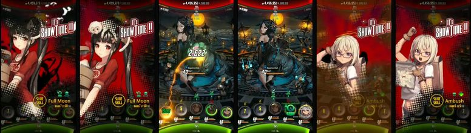
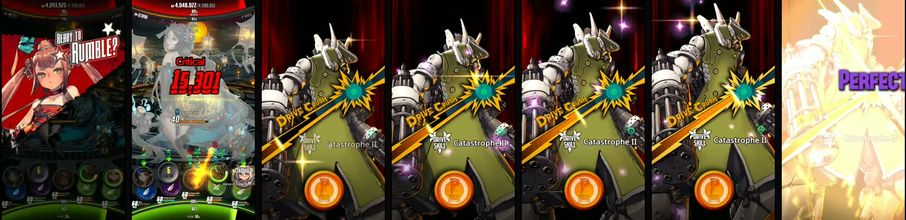
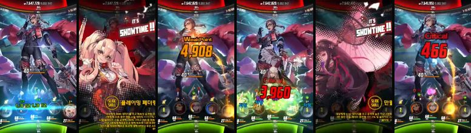
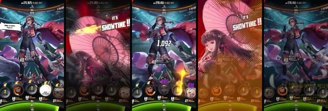
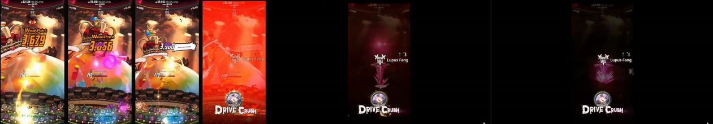
| 片段 | 约时长 | 帧上看到的事 |
|---|---|---|
| SHOWTIME（Slide） | 1.0～1.4s | 红幕擦入 → 立绘特写稳住 → 金 SLIDE 标弹出 → 切回战场放技能色爆点 |
| Drive Crush QTE | 1.6～2.2s | READY 斜切 → 角色大图 + DRIVE CRUSH 斜标 → GOOD BUTTON 亮 → 点按闪光 → PERFECT 150% + TO FEVER% → 回战场 |
| 单次打击 | 0.2～0.4s | Boss 身上爆点 → 数字弹出并上漂 → WeakPoint 叠字比单 hit 更大、更慢消失 |
| 敌 WARNING | 0.8～1.2s | 红闪切入 → WARNING 稳住 → 敌技能演出 → 红幕淡出，头像恢复 |
| Fever 窗口 | 数秒（条在走） | 彩虹条出现 → COMBO 数字每击刷新 → 速度线常驻 → 条空了立刻摘掉字，不淡出很久 |
| Boss 开场 | ~2s | 海报体 + 爪影扫过 → 名字条 → 切进圆台 Idle |
森林 / 月夜圆台，Boss Equinoctial Bari 几乎坐满台面。队：Mei / Melpomene / Jacheongbi / Abaddon / Shiozuka。顶血 4,500,013。MANUAL，所以能看清 TAP FULL、Slide 预约和 Drive 时机。

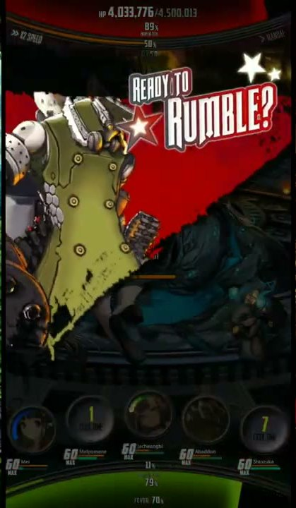

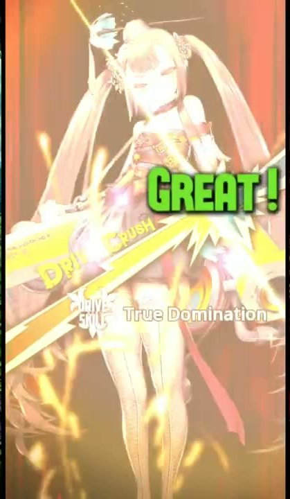
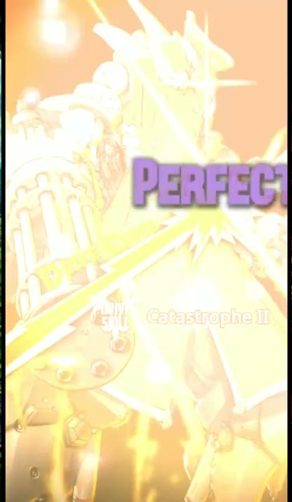
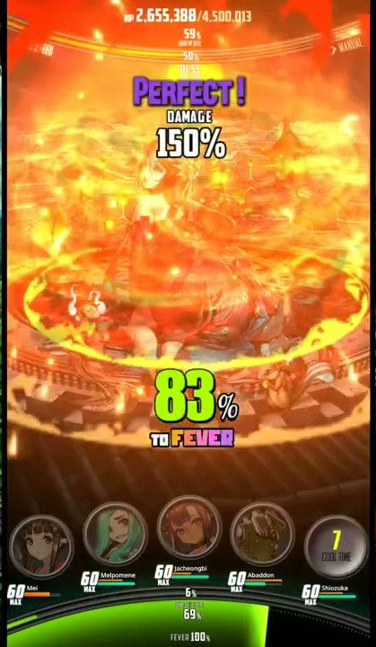


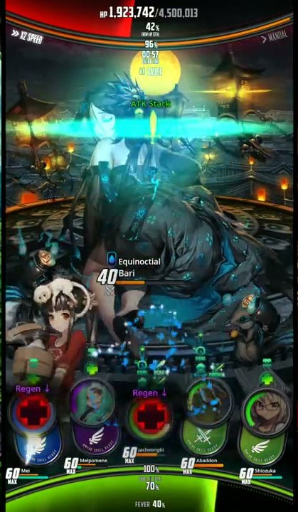
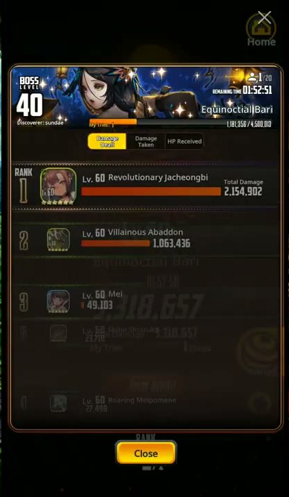
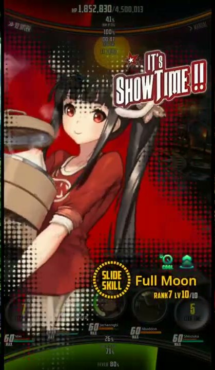
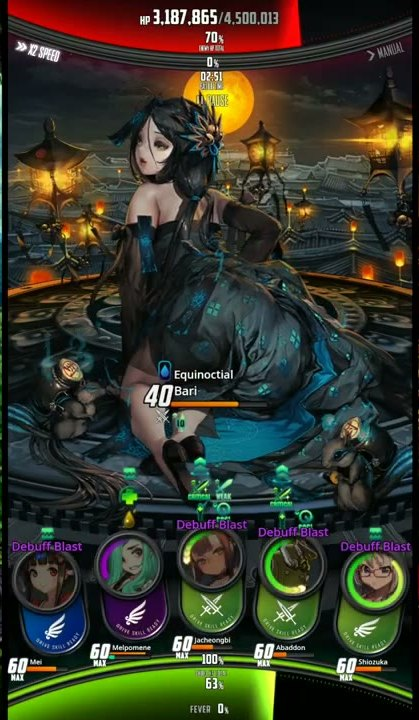
40 Equinoctial Bari + 小橙血。我方头像环在转。Debuff Blast / Vampirism 挂在头像顶。83% TO FEVER，火环打在 Boss 脚下。三栏录像：左立绘 | 中战斗 | 右角色详情。进战前是 10th PARTY、LV40、900 万血、전투시작、연속전투。Boss 开场词 THE MASTER OF DESIRE BOSS · 창기사 루인。FULL AUTO ×3，SHOWTIME 仍然播，Drive QTE 自动打出 Perfect。
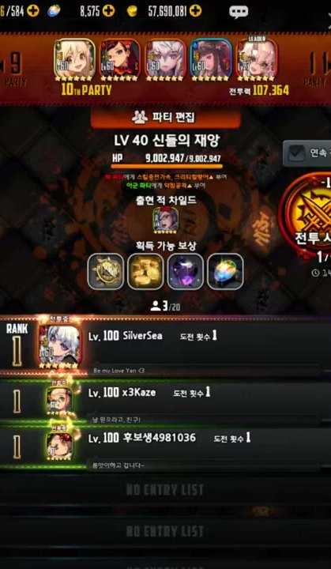
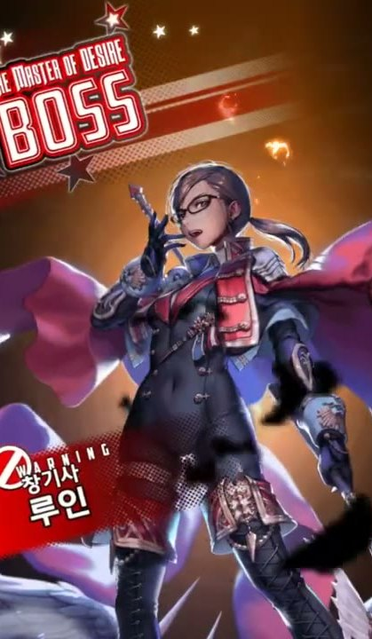
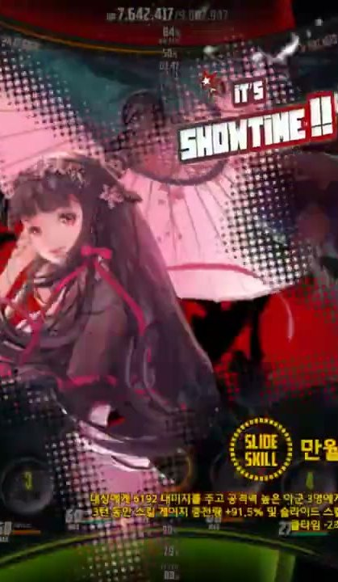
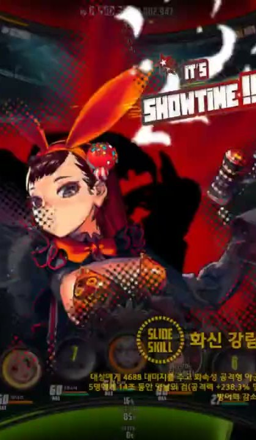
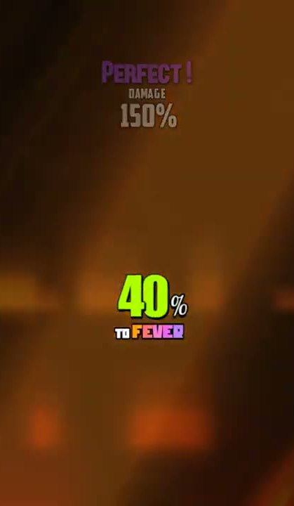
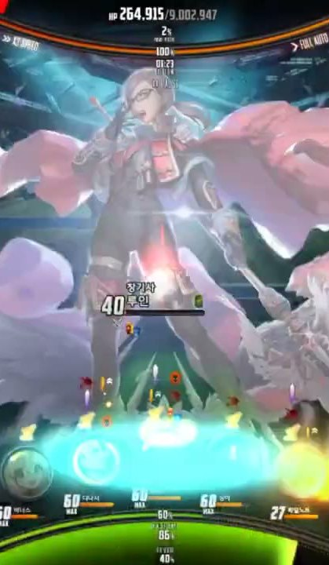

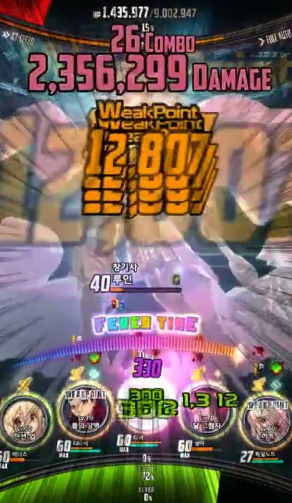
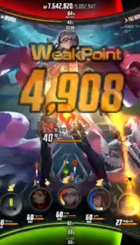
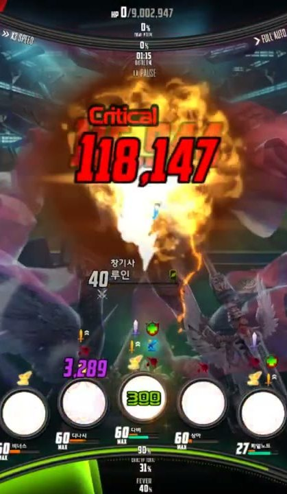

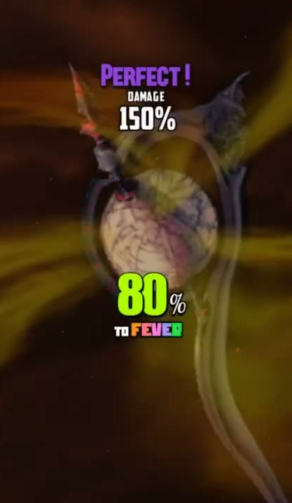
RAGNA:BREAK COMPLETE，左右 擊 / 滅，累计伤害 = Boss 满血（一发击杀），RANK 1/5。竖屏。大厅 WORLD BOSS TRIAL → 开场爪影海报 → 金色圆竞技场。20 人头像两排。Boss 是体型巨大的 Aurora King（王冠 + 彩虹披风）。后半录像切抽卡，战斗约在 64s～224s。
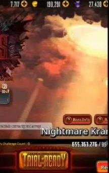
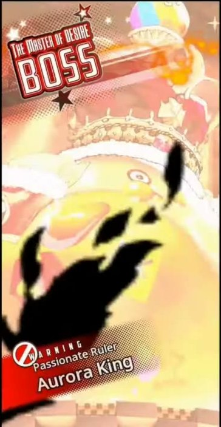
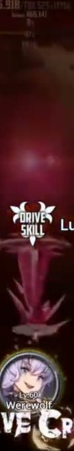

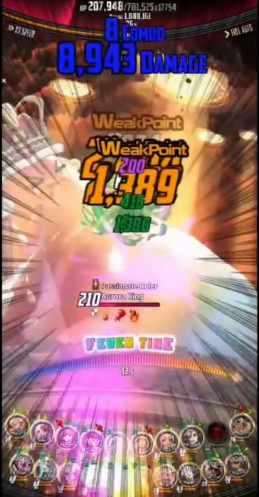
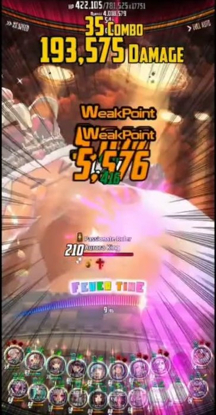
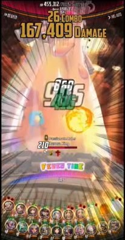
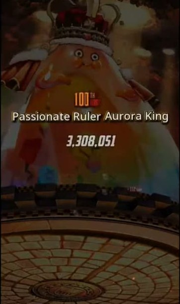
350,368 / 781,525、DAMAGE 累计、×3 SPEED、FULL AUTO。Boss 名 210 Passionate Ruler Aurora King。100TH HIT + 名字 + 白字伤害 3,308,051。没有擊滅金环——世界王是刮血排名，不是一刀杀掉。TAP FULL，不要每次普技都 SHOWTIME。帧文件在 docs/reference/gamekee/_combined/battle_vids/。原片不进发行包。